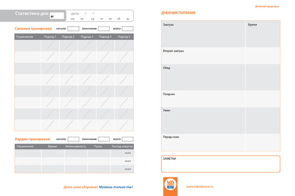

ДНЕВНИК ЗДОРОВЬЯ
Доступ в Интернет не всегда есть под рукой, а блокнот всегда можно положить в сумку. Если вам по каким-то причинам неудобно пользоваться нашим дневником питания, мы придумали альтернативу.
Наш Дневник здоровья — это набор готовых к распечатке страниц для записи плана тренировок, личных данных (рост, вес, параметры, жировая масса), целей, расписания занятий, заметок, дневника питания и статистики. Их можно вывести на печать в цветном и черно-белом варианте и подшить в органайзер или папку для листов формата А5, а можно отдать в ларек с печатью и переплетными работами и получить готовый блокнот.
Для начала стоит записать ваши исходные данные, чтобы было с чем сравнить через месяц или, тем более, полгода.
Приступим
Дневник Здоровья: С чего начнем?
Если вы планируете свои тренировки на несколько недель вперед, вам подойдет отдельная страница, которую можно повесить на стену.
Дневник Здоровья: План на неделю
Планирование — очень важная вещь. Поставьте цель на предстоящую неделю, и по итогам сверьтесь со своими записями. Получилось?
Дневник Здоровья: Цели на неделю
Каждый день важен. Особенно это касается питания. Запишите все, что вы съели за день, включая конфету, которой вас угостил коллега, и бутерброд, который вы съели на ходу.
Дневник Здоровья: Статистика дня

Вот и весь дневник здоровья, который поможет Вам составить и записать планы тренировок и другие расчеты.